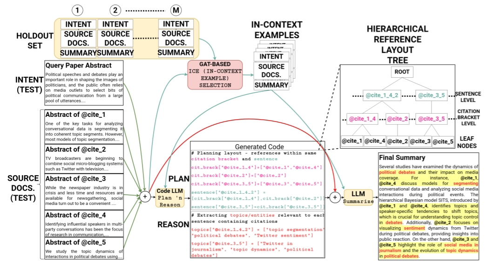
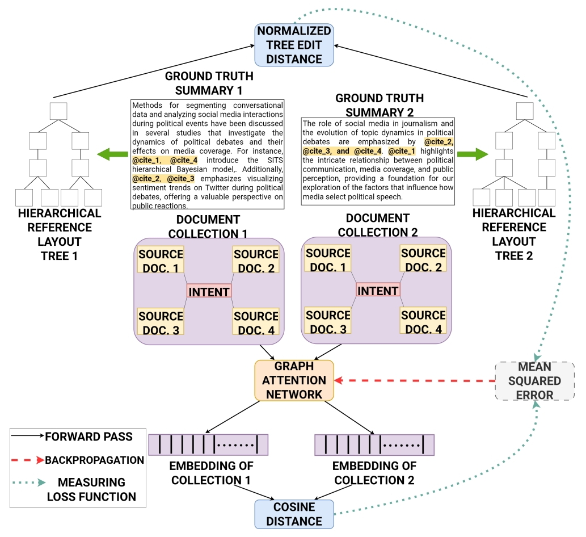
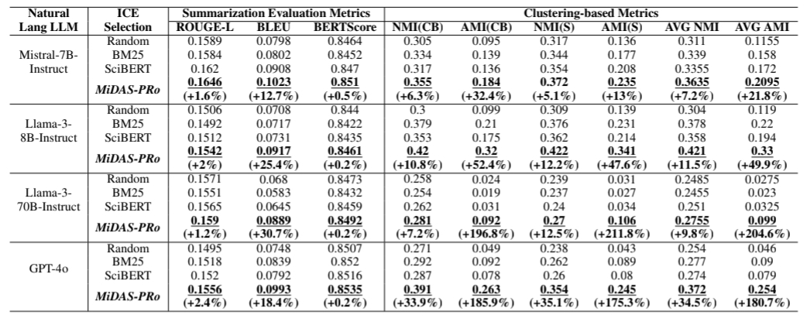
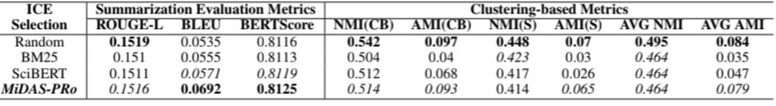
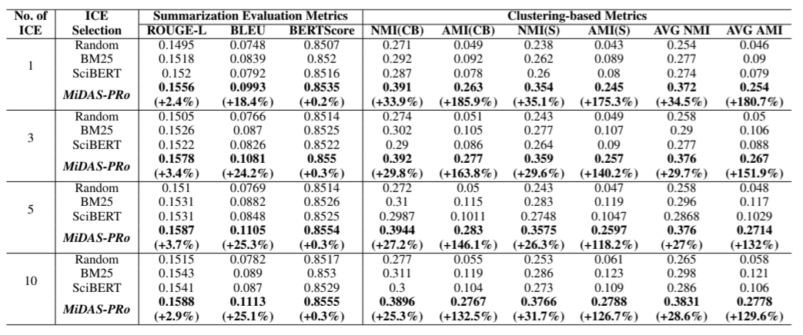
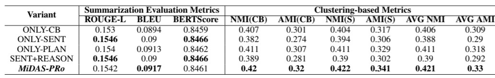
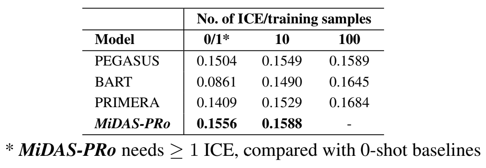
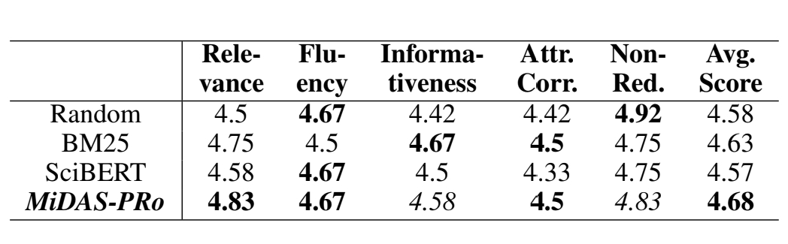

Document summarization has greatly benefited from advances in large language models (LLMs). In real-world situations, summaries often need to be generated from multiple documents with diverse sources and authors, lacking a clear information flow. Naively concatenating these documents and generating a summary can lead to poorly structured narratives and redundancy. Additionally, attributing each part of the generated summary to a specific source is crucial for reliability. In this study, we address multi-document summarization with attribution using our proposed solution ✨ MiDAS-PRo ✨ (Multi-Document Attribution-inclusive Summarization via Planning-cum-Reasoning) consisting of three stages: (i) Planning the hierarchical organization of source documents, (ii) Reasoning by generating relevant entities/topics, and (iii) Summary Generation. We treat the first two sub-problems as a code completion task for LLMs. By incorporating well-selected in-context learning examples through a graph attention network, LLMs effectively generate plans and reason topics for a document collection. Experiments on summarizing scientific articles from public datasets show that our approach outperforms state-of-the-art baselines in both automated and human evaluations.
This Figure shows an example image conveying satire. The irony in the image is that the person is messaging someone a very heartfelt message on the mobile, while sitting on a toilet seat!

Our annotation Pipeline for YesBut in 4 Stages- (1) Collecting Satirical Images from Social Media (2) Human Annotation of satirical images (3) Generating 2D stick images using DALL-E 3 and annotated descriptions (4) Generating 3D stick images using DALL-E 3 and annotated descriptions

Distribution of the original 283 satirical images downloaded from Social Media based on different aspects of image content and annotated descriptions

This is a binary classification task, where given an image, the model needs to predict whether the image is satirical or not.

Given a satirical image, we evaluate the model’s satire understanding capability in images by (1) prompting the model to generate a textual description of each subimage as input, using the prompt “Describe the image”. (2) prompting the model to generate the punchline in the image using the following prompt (referred to as “WHYFUNNY_PROMPT” hereafter)- “Why is this image funny/satirical?”.

Given either the left or right sub-image having the style of a colorized sketch, the other sub-image needs to be chosen from two options, one having a 2D, and the other having a 3D stick figure style, such that the entire image so formed is meaningful and satirical.



@article{Nandy_Bandyopadhyay_2025, title={Language Models of Code Are Few-Shot Planners and Reasoners for Multi-Document Summarization with Attribution}, volume={39}, url={https://ojs.aaai.org/index.php/AAAI/article/view/34676},
DOI={10.1609/aaai.v39i23.34676},
abstractNote={Document summarization has greatly benefited from advances in large language models (LLMs). In real-world situations, summaries often need to be generated from multiple documents with diverse sources and authors, lacking a clear information flow. Naively concatenating these documents and generating a summary can lead to poorly structured narratives and redundancy. Additionally, attributing each part of the generated summary to a specific source is crucial for reliability. In this study, we address multi-document summarization with attribution using our proposed solution ***MiDAS-PRo***, consisting of three stages: (i) Planning the hierarchical organization of source documents, (ii) Reasoning by generating relevant entities/topics, and (iii) Summary Generation. We treat the first two sub-problems as a code completion task for LLMs. By incorporating well-selected in-context learning examples through a graph attention network, LLMs effectively generate plans and reason topics for a document collection. Experiments on summarizing scientific articles from public datasets show that our approach outperforms state-of-the-art baselines in both automated and human evaluations.},
number={23},
journal={Proceedings of the AAAI Conference on Artificial Intelligence},
author={Nandy, Abhilash and Bandyopadhyay, Sambaran},
year={2025},
month={Apr.},
pages={24930-24938}
}